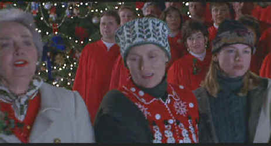

Universal/1998/128m/ANA 1.85
George Gulden is the pampered American Literature Department university chair arrogantly charming his way through a career highlighted by a National Book Award for criticism. Lingering in the background is the novel he never completed while his a new edition of his collected essays is being prepared for publication. Ellen is the daughter driven to follow in her father’s footsteps carving her way through the internecine big time magazine world. Kate is the faithful wife, catering to George and giving herself to heart and home without reservation. When George demands that Ellen come back home to take care of her mother the cracks in the lacquered family structure show up. What makes One True Thing most interesting is the way it shifts focus between the varied relationships in the family. Just when you think this movie is all about Ellen’s relationship to her father, the exploration shifts to mother/daughter with a sprinkling of husband/wife. The family picture is built with careful attention to detail. The characters are true to the cinematic world they inhabit.
 |
Silent night for The Minnies©Universal |
Carl Franklin directs One
True Thing with admirable restraint. Franklin consistently looks for the little
moments instead of going melodramatic. The camera always knows where to be without calling
attention to itself. He guides his actors through performances that consistently reach to
inner emotions. Meryl Streep not only digs deep within herself as Kate, but she exposes
everything an actress must fear; looking miserable in bed clothes with red rimmed dark
shadowed eyes and looking ridiculous dressed as Dorothy Gale from The Wizard of Oz.
Well, you can bet Streep is up to the task.It's one of her best performances and that's
really saying something. It’s great to see Streep paired with another female
screen force, Renee Zellweger. The young actress can holds her own with veterans Streep
and William Hurt. She has a difficult role dealing with emotions sheathed in an icy core,
but the beauty of this actress is that she can convey something beyond surface
superficialities. William Hurt is so self-centered in One True Thing, it’s
hard to understand what he might be feeling except sorry for himself.
One True Thing make its DVD debut with a visual honesty
consistent with the film’s material. The simple and direct photography is sharply
transferred with excellent color accuracy. The picture packs plenty of punch with the
marvelous town Christmas tree pageant glistening with tears and snowflakes. Detail is
positively cruel to Meryl Streep revealing the pain and devastation in her eyes. The Dolby
Digital 5:1 sound is fine. Dialogue is clean and well balanced. The surround information
is not very active, but it conveys the feeling of place and space. Included with the DVD
is a Spotlight on Location short with views about the film from the principals
involved. It's a cut above the usual short since it rarely has a moment without some
commentary over the action.